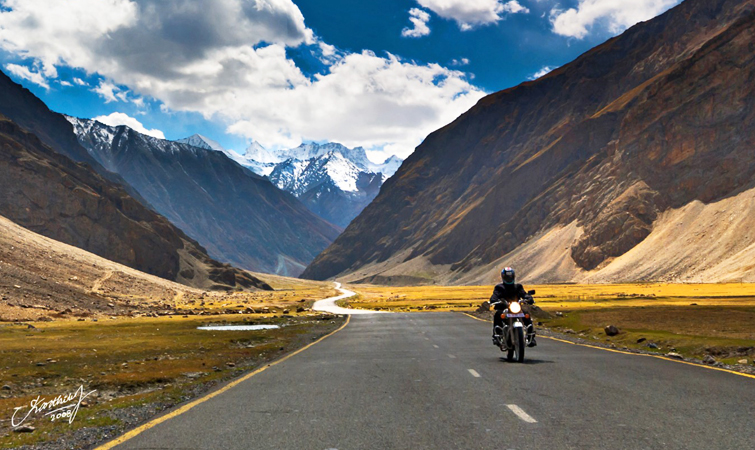
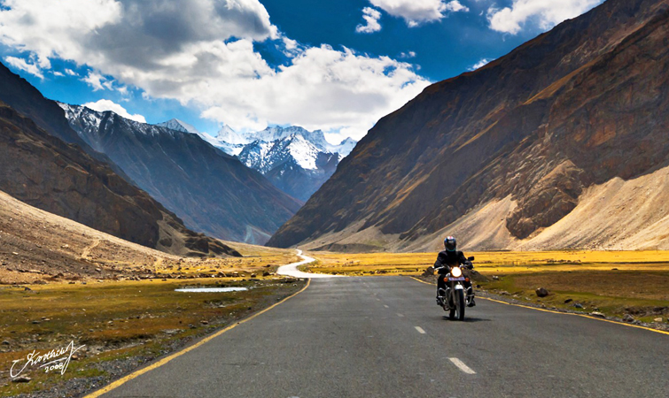
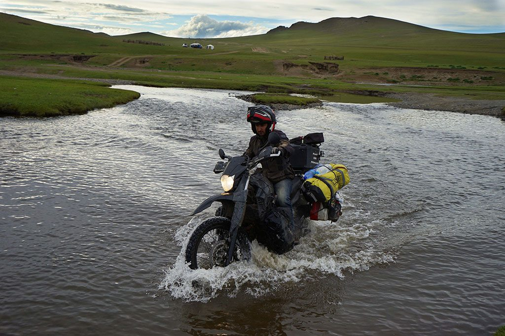

|
HELLO, I AM SOHEL AKRAM
SO, PEOPLE LIKE TO VISIT NEW PLACES WHENEVER THEY FIND TIME AND OPPORTUNITY.....PURPOSE:PEOPLE TRAVELS FOR DIFFERENT PURPOSES.SOME TRAVEL FOR GETTING AN EDUCATION AND SOME TRAVEL FOR PLEASURE,MANY
PEOPLE ALSO TRAVEL FOR BUSINESS AND EMPLOMENT.
Travelling plays an important part in making us feel relaxed and rejuvenated. It also brings positive changes in our life and keeps us alive and active. Travelling gives us practical experience of things we have studied in the books and surfed on the internet. So a person who does not travel at all does not find any meaning in the name of India Gate or Ganga River. However, if he has travelled to these places, he can truly relate everything he has studied and will always remember each and every detail of that place.
Nowadays, many people like travelling as they want to explore the world and watch everything they have read about. And this seems to be quite justified as practical knowledge is way more essential and effective than the theoretical one. People like to visit historical places present in different parts of the world and gather information on the same to write books and stories.
Travelling has become easier due to advancement in technology and transportation. Earlier people use to travel by road or sea and it takes many days to reach from one place to another, however, now the scenario has changed and people travel to far off places within hours and minutes-thanks to well-built roads and aeroplanes.
People travel for different purposes, some travel for the sake of education while others travel to relax and enjoy. Many people take a break from their hectic schedule and go for a vacation, this makes them feel delightful and also help them to invigorate.
Many poets, writers, and painters travel to different places to capture some of the best things of nature and express them in the form of paintings or poems. People also travel for business purposes so as to expand and gain profit from their business. Students travel for educational purposes so everyone has a unique reason to travel. Therefore, travelling is an important part of human life and it instils knowledge and offers various benefits to mankind.
